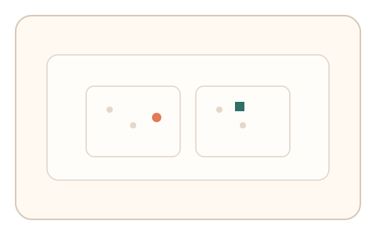
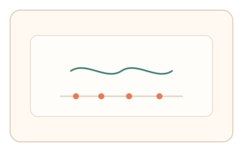
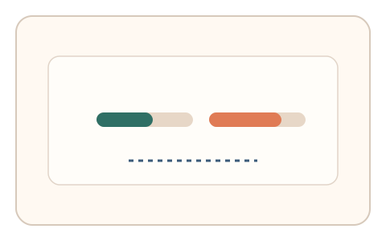

#137
E：双底座耦合 × 双信号 × 多阶段/双任务（认知偏置 + 生理/时域）
已扩展
搜索不对称‑节律抖动
完成两种搜索不对称任务后节律点击，比较搜索耗时差与节律抖动的一致性。
概念原文
完成两种搜索不对称任务后进行节律点击，系统比较不对称耗时与节律抖动的一致性。
组合“搜索结构差异 + 节律噪声”。
研究背景
视觉搜索存在不对称性，某些特征组合更易被发现。节律点击体现感知‑运动同步能力，将两者耦合可增强区分度。
核心机制
- 执行两种不对称视觉搜索任务。
- 记录两任务耗时差与路径停顿。
- 进入节律点击任务并记录间隔抖动。
- 比较耗时差与节律抖动的任务内一致性。
用户流程
- 步骤 1：用户完成两组搜索任务。
- 步骤 2：跟随节拍完成点击序列。
- 步骤 3：系统对比耗时差与抖动特征。
判定信号
搜索耗时不对称
不对称差异反映视觉搜索策略。
节律抖动（间隔方差）
人类节律同步存在自然波动。
判定逻辑
耗时差与节律抖动需落在基线区间且具一致性；过度稳定或无差异判异常。
对抗面
- 脚本直接识别目标并给出最短路径
- 以固定间隔生成节律点击
防御与缓解
- 随机化目标/干扰项与布局
- 节拍速度与相位随机扰动
- 加入停顿检测与多轮比较
可达性与风险
提供更慢节奏与键盘模式，降低节律负担。
- 视觉疲劳导致搜索耗时波动
- 设备延迟影响节拍精度
可视化状态

状态 1：搜索不对称
两种搜索任务耗时对比。

状态 2：节律点击
跟随节拍完成点击序列。

状态 3：一致性判定
比较耗时差与抖动分布。
参考资料
Visual search
说明视觉搜索与不对称性。
Sensorimotor synchronization
说明节律同步与抖动。